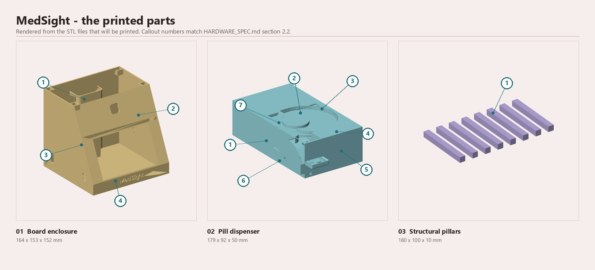

TRON Programming Contest 2026 · RTOS Application
Most dispensers release pills and assume the rest. MedSight recognises the patient by face, counts every pill physically leaving the turntable, and records what actually happened.
Prefer a direct download? The complete source as a ZIP · the handbook, print edition.
Why
And in residential care it fails differently - through workload, interruptions and paper records rather than forgetfulness alone.
Every figure on this page carries a source. The full evidence base, with the uncertainty each source reports and two widely-quoted numbers corrected, is in the bibliography.
How it works
A µT-Kernel alarm handler fires exactly once. A banner names the patient and the time; three short beeps.
CenterFace detects the face, MobileFaceNet embeds it, cosine match against the gallery. 209 ms, every time.
The turntable turns. Each pill passes the infrared sensor on the way down the chute - a detection pulse measured at 17-46 ms.
With the mechanism attached the bar advances once per sensor pulse, so it reports what the hardware did. The timed animation exists only in the simulation build, where there is no sensor to read.
Action recognition observes the window; the patient's button press remains the confirming action. One record to the card.
The log records what actually came out, written once
after the outcome is known -
DISPENSE: name 3 requested, 3 counted (OK) - never two claims
about one event.
TRON × AI
Every inference runs on the board. Each network below is listed with its origin and the licence that governs it.
| Network | Decides | Origin | Licence |
|---|---|---|---|
| CenterFace | Detects a face and emits five landmarks with it, both mouth corners among them | STMicroelectronics | SLA0044 |
| MobileFaceNet | Encodes the face crop as a 128-dimension embedding for cosine matching | STMicroelectronics | SLA0044 |
| MediaPipe hand landmarks | 21 keypoints, giving the fingertip position during the confirmation window | Google. Not ours. We selected, quantised, compiled and integrated it - we did not train it | Apache-2.0 |
| Pill detector | Single-class detection in a mouth-centred region. Corroboration only | Trained by this project | AGPL-3.0, from the training framework - resolved |
The pill detector was trained here on a public pill dataset and adapted to the accelerator: the convolutional body runs as 8-bit integer on the NPU and the YOLO decode on the Cortex-M55. On the validation set the 8-bit model matches the floating-point one, but at the deployment distance a pill is about an 8-pixel object and per-frame detection is around 7%, so it corroborates the hand geometry rather than deciding on its own.
It carries AGPL-3.0 because Ultralytics YOLOv8
trained it and that licence follows the weights, so the whole training
pipeline is published with them in
tools/pill_detector/.
Everything around the face networks is our code too: the frame snapshot, the CenterFace box decode, L2 normalisation, int8 quantisation, cosine gallery matching and SD persistence. Details in the technical reference; full attribution in the third-party inventory.
The RTOS
Real-time behaviour, power and memory footprint, each as a measured figure and the kernel mechanism behind it.
WFI, waking
~980 times a second. The vendored BSP ships low_pow()
empty; ours forwards to a real WFI.What the kernel is used for, and why each one:
| Primitive | What it does here |
|---|---|
tk_cre_tsk |
Six tasks, priorities derived rate-monotonically. The AI task sits below the interface deliberately, which is what keeps touch and the physical button alive while the accelerator works. |
tk_cre_flgtk_wai_flg |
Inference is dispatched through an event flag. One blocking call tells apart face found, no face, and no answer at all. A queue, a semaphore or a mutex cannot say that. |
tk_cre_almtk_sta_alm |
Dose scheduling is an alarm handler, not a task polling the clock. Polling would wake 8,640 times a day in order to act four times. |
tk_cre_mbftk_cre_mtx |
The logger's queue, so no caller ever waits on an SD write, and the firmware's one mutex: the clock, which has two readers. |
low_pow() |
The vendored board support package ships its idle hook
empty. Ours executes WFI and accounts
for the cycles, which is where the 89.6% comes from. |
One file talks to the kernel. Every call above lives in
ms_osal.c, behind an abstraction the rest of the firmware
was written against, so the kernel's use is deliberate and in one place
rather than scattered. Two idioms were evaluated and deliberately not
adopted, with the reasoning recorded: a fixed-size memory pool, and an
event flag for the confirm state. Neither would have done any work here.
Every measurement above, and how it was taken, is in the technical reference. The evaluation path is in the handbook.
Where it stands
MedSight dispenses real pills, counts them, recognises the patient and keeps a record, on its own power with no computer attached. Five things are not done yet, and each has a plan.
One turntable, and the record stores a count rather than a drug name. Next: six to eight stacked dispensing modules. The interface already draws four slots with three greyed out, and the dispense call already returns what was counted, so the firmware change is additive.
The first sign of an empty turntable is a short dose. Next, and the cheapest useful fix: a carer-entered "filled with N", decremented by counted pills rather than assumed ones. It uses screens that already exist.
No radio in this build, which kept the prototype achievable. Next, and top of the roadmap: a carer alert over Wi-Fi and a patient-worn band. The scheduler hook already fires once per window; the work is the radio and its security design.
The match is a still-image comparison and does not test for a live face. Next: a passive liveness check on the camera and accelerator already in use, applied before a match is accepted.
A printed prototype shell. The device withholds - it refuses a dose outside its window and to a face it does not recognise - but it does not lock. Next: a lockable enclosure, tamper detection, and a vibration sensor so the log can say when the unit was shaken.
The device counts pills out and corroborates a swallowing gesture. It cannot prove somebody swallowed, and no device of this class can, which is why the patient's button press stays the confirming action. The rest is in the handbook, Part 10.
The hardware

| Item | Part |
|---|---|
| Processor | Arm Cortex-M55 @ 800 MHz + ST Neural-ART NPU @ 1 GHz, on an STM32N6570-DK |
| Display | 5″ 800 × 480 RGB565 with GT911 capacitive touch - 22 screens from one design system |
| Camera | Sony IMX335 via DCMIPP |
| Actuator | 28BYJ-48 stepper through a ULN2003A, driven half-step, one atomic register write per step |
| Sensor | Infrared proximity on EXTI0, both edges timestamped in the ISR |
| Audio | Active piezo, DC switched, five patterns |
| Storage | microSD - the only storage in the device. The unit ships with its card supplied separately, and until the card is fitted the home screen says so and nothing is recorded |
| Power | 5 V over USB-C. It boots itself from external flash and has run a complete dispense on battery, with no computer attached |
The full annotated parts view, the specifications block and the interface map are in HARDWARE_SPEC.md; the wiring, with a diagram and a bring-up order, is in the same document.
Video
Face match → dispense → pills counted by the sensor → confirm → the audit line in carer mode. A real dispense, not a simulated one.
A written walkthrough of the same sequence, including a five-minute path and a ten-minute one, is in the handbook.